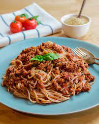

Main Page
Vegan Spaghetti Bolognese

These vegan Spaghetti Bolognese will statisfy your tastebuds, while being cruelty free and easy to make!
For the vegan meat, just use your favorite kind. I like to go with firm tofu crumble and dry spices to marinate.
Ingridients
- 400g spaghetti
- 1 white/red onion
- 2 cloves garlic
- olive oil
- 400g meat substitute
- 1/2 tube tomato paste
- 200ml red wine/dark current juice
- 1 carrot
- 500g tomato passata
- salt
- pepper
- fresh basil
- dry italian herbs
Instructions
- Start by cutting up your vegetables in fine cubes and mince the garlic. Then set aside and bring one pot of salted water to boil.
- While waiting for the water to start booiling, we begin to fry the meat in a sufficient amount of olive oil.
- Add pasta to the boiling water and follow instructions on the packaging. If done earlier than the sauce, strain it but keep some pasta water and set aside.
- Add Onions to the meat and let the onion get some colour. Add the carrots and garlic. The garlic mustn't burn.
- Incorporate the tomato paste and fry it for a bit to get some roasted aromas.
- Now in goes the wine or the juice and let simmer down for a bit, then add in the tomato passata.
- Season to taste with the spices and add in some pasta water
- Mix up the sauce with the pasta and garnish with the fresh basil and serve warm.